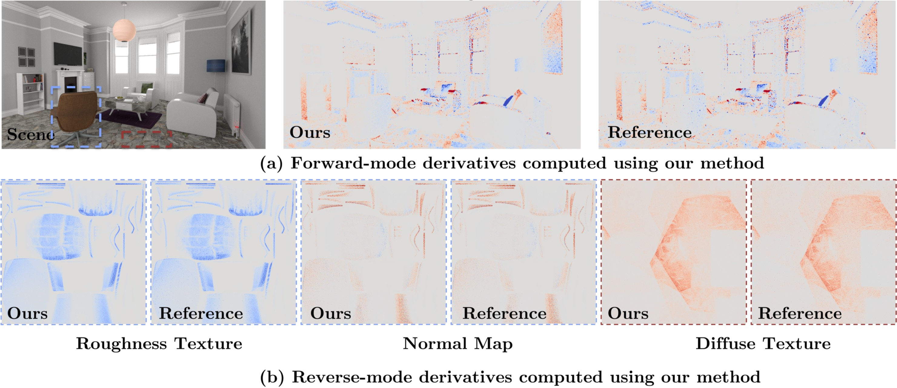

Differentiable Polarized Path Tracing
1Max Planck Institute for Informatics, 2Google, 3Imperial College London
European Conference on Computer Vision (ECCV), 2026

Polarization plays an important role in differentiable inverse rendering. (a) Parameters that control polarization effects such as a linear polarizer rotation θ can produce significant gradient contributions, but existing differentiable path tracing methods struggle to compute these gradients efficiently and accurately. We introduce a caching mechanism for polarized path replay that avoids inverting rank-deficient Mueller operators. (b) Our method produces reverse-mode gradients with respect to scene parameters that match conventional automatic differentiation (AD), while using substantially less memory. Our algorithm improves runtime relative to existing unbiased baselines and yields substantially lower gradient error.
Abstract
Physically based differentiable rendering has proven to be a powerful tool for inverse rendering problems (e.g., 3D reconstruction, reflectance estimation, lighting estimation). However, most existing methods operate solely on radiometric intensity, discarding valuable polarization cues that constrain scene geometry and material properties. While forward simulation of polarized light is well-defined via Mueller-Stokes calculus, extending reverse-mode differentiation to this domain presents significant challenges. The rank-deficient nature of common polarimetric operators, such as linear polarizers and diffuse reflections, violates the invertibility assumptions of standard gradient estimators like path replay backpropagation and results in numerical instability. We address this by proposing a robust, polarization-aware differentiable path tracing method. Our approach estimates unbiased gradients through a combination of path replay and local caching. This formulation enables efficient and stable optimization of material and lighting parameters in complex scenes, broadening the applicability of physically based inverse rendering.
Downloads & resources
- Publication:
- Code:
Text Reference 
Pramod Rao, Jérémy Riviere, Xilong Zhou, Abhijeet Ghosh, Abhimitra Meka, Thabo Beeler, Marc Habermann, Christian Theobalt, Delio Vicini. Differentiable Polarized Path Tracing. European Conference on Computer Vision (ECCV), 2026.
BibTex Reference
@inproceedings{Rao2026DPPT,
title = {Differentiable Polarized Path Tracing},
author = {Pramod Rao and J{\'e}r{\'e}my Riviere and Xilong Zhou and Abhijeet Ghosh and Abhimitra Meka and Thabo Beeler and Marc Habermann and Christian Theobalt and Delio Vicini},
booktitle = {European Conference on Computer Vision (ECCV)},
year = {2026},
eprint = {2607.13265},
archivePrefix = {arXiv},
}